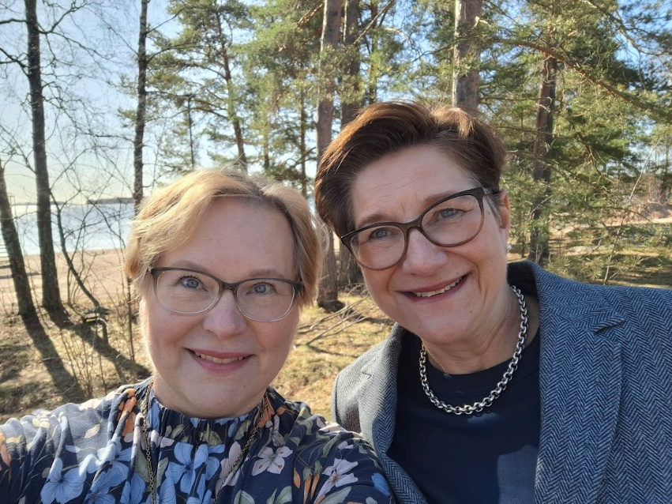

SiVu -kumppanit
Sipilä & Vuorimaa
Hallituksen ja johdon strateginen kumppani.
Vaikuttavaa johtamista, kestävää kehitystä.
Tarvitsetko tukea organisaatiosi toiminnan kehittämiseen? Entä valmennusta ja sparrausta hallitus- tai johtoryhmätyöhön, johtamiseen ja esihenkilötyöhön? Valitse rinnallesi SiVu- kumppanit!
Tarjoamme konkreettisia työkaluja parempaan yhteistyöhön omistajat-hallitus-johto - ketjussa ja organisaatiokulttuurin kehittämiseen. Teemme johtamisen kehittämisestä vaikuttavaa, tuloksellista ja tehokasta. Autamme asiakkaita ottamaan käyttöönsä niin henkilökohtaisen kuin koko organisaation todellisen potentiaalin.
360-asteen käytännön työkokemuksemme johtoryhmä- ja hallitustyöskentelystä sekä yrittäjyydestä antaa meille uniikin näkökulman muutoksen johtamiseen: olemme itsekin "kädet savessa" toimineita kokeneita johtajia. Laaja ja monipuolinen kokemuksemme koostuu mm. seuraavista osaamisalueista: hallitus- ja johtoryhmätyö, ennakointi ja strategiatyö, talous, juridiikka, vastuullisuus, markkinointi, viestintä, osaamisen kehittäminen sekä mentorointi ja valmentaminen.
Asiakaslupaus
- Vaikuttavaa ja tuloksellista johtamisen kehittymistä
- Sujuvampaa ja tehokkaampaa omistajat-hallitus-johto -ketjun yhteistyötä
- Tuloksellista johtoryhmätyötä hyvässä tiimihengessä
- Henkilökohtaisen johtajuuden nostamista uudelle tasolle
- Kehittymistä yhdessä asiakkaiden ja kumppaneiden kanssa
- Konkreettisia keinoja muutoksen johtamiseen ja yrityskulttuurin kehittämiseen
- Vaikuttavaa uudistumista ja tulevaisuuskestävyyttä
Meiltä saatte monipuolista ja näkemyksellistä johtamisosaamista eri toimialoilta ja erilaisista organisaatioista perhe- ja pk-yrityksistä järjestöihin ja säätiöihin.
Keskiössämme on aina asiakasorientaatio ja tulevaisuusnäkökulma: johtamista ei kehitetä tyhjiössä, vaan yhdessä sidosryhmien kanssa (omistajat, hallitus, johto, henkilöstö, asiakkaat, kumppanit, media, yhteiskunta).
Palveluitamme
Omistajat ja hallitus:
- Omistajatahdon kirkastaminen ja omistajastrategian muotoilu
- OHJ-ketjun roolit, vastuut ja tehtävät
- Tulevaisuustyö ja strategian kehittäminen
- Hyvä hallintotapa (Corporate Governance)
- Hallitustyön organisointi, tavoitteet, seuranta
- Hallitus tiiminä, ryhmädynamiikka, puheenjohtajan rooli
- Hallituksen ja toimitusjohtajan yhteistyö
- Neuvonantajien käyttö omistajien, hallituksen ja johdon sparraajana
- Neuvonantajaryhmän (Advisory Board) rakentaminen ja työn organisointi
Johtoryhmä:
- Hallituksen ja johtoryhmän yhteistyö, toimitusjohtajan rooli ja tehtävät
- Strateginen ennakointi ja tulevaisuustyön johtaminen
- Johtamisjärjestelmän rakentaminen ja kehittäminen
- Johtoryhmätyön organisointi ja tiimidynamiikka
- Johtamislupaus, tavoitteellinen johtaminen, suunnitteluprosessit
- Yksilösparraus: Toimitusjohtaja, johtoryhmän jäsenet
Esihenkilöt:
- Valmentava johtamisote
- Ihmisten erilaiset toimintatyylit ja niiden vaikutus ryhmädynamiikkaan
- Organisaatiokulttuurin vaikutus ja kehittäminen
- Muutostilanteet ja yrityskulttuuri, muutoksen johtaminen (esim. yrityskaupat)
- Työnantajan ja esihenkilön lakisääteiset velvoitteet
- Esihenkilötyö haastavissa tilanteissa
Meistä
Keitä olemme?
Meillä on 360 asteen kokemus johtoryhmä- ja hallitustyöstä erilaisissa organisaatioissa: pk- ja perheyhtiöt, järjestöt, yhdistykset, säätiöt, startupit. Olemme työskennelleet useissa asiakasorganisaatioissa strategian, tulevaisuustyön, johtamisen, yrityskulttuurin ja toimintatapojen kehittämisen parissa.
Meillä kummallakin on laaja kokemus valmentamisesta, kouluttamisesta, coachingista, mentoroinnista ja fasilitoinnista erilaisissa organisaatioissa ja eri toimialoilla. Olemme tukeneet asiakkaitamme niin yksilövalmennuksilla kuin yli sadan osallistujan pitkillä valmennuskokonaisuuksilla.

Katri Sipilä
Koulutus: OTK, varatuomari, HHJ PJ, Certified Business Coach Master
Rooleja: Toimitusjohtaja, johtoryhmän jäsen, hallituksen puheenjohtaja ja jäsen, hallituksen ja johdon neuvonantaja ja valmentaja, yrittäjä, start-up -enkelisijoittaja, HHJ- kouluttaja, Boardman Oy:n partneri ja Hallituspartnerit Boardprofessionals Helsinki ry:n jäsen
LinkedIn: https://www.linkedin.com/in/katrisipila/

Päivi Vuorimaa
Koulutus: KTM, Certified Business Coach, RMP-motivaatiovalmentaja, NLP Practitioner, Henkilöstöjohtajan tutkinto, Tuotekehittäjän erikoisammattitutkinto, Tiedottajan tutkinto, Yrittäjän ammattitutkinto
Rooleja: Hallituksen puheenjohtaja, varapuheenjohtaja ja jäsen, toiminnanjohtaja, toimitusjohtaja, johtoryhmän/ johtotiimin puheenjohtaja ja jäsen, johtaja - strategia ja kyvykkyydet, johtaja - tulevaisuuden rakentaminen, johtaja - koulutus ja kehitys, kehityspäällikkö, yrittäjä, Hallituspartnerit Boardprofessionals Helsinki ry:n jäsen, Boardman Oy:n jäsen, Henry ry:n jäsen